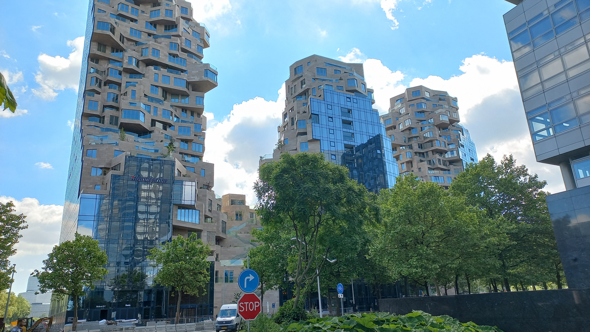

- Miele family holds 51.1%; Zinkann family holds 48.9% — all ~80 family stakeholders are direct descendants of the 1899 founders
- No external shareholders, no IPO pressure — capital allocation follows long-term quality commitments over short-term returns
- Products are tested for 10,000 hours simulating a 20-year lifespan — Miele's official engineering standard, not a marketing claim
- ~47 direct webshops across Europe, Americas, Asia-Pacific and Africa — Miele owns the customer relationship, the transaction, and the data
- AI Product Adviser generates 9% of total online sales at 2× the conversion rate of standard sessions (up from 7.2% within one year)
- Miele X, launched July 2020 in Amsterdam, is the dedicated entity built to grow the direct channel globally
- Miele Professional serves hospitals, research laboratories, dental practices and commercial catering — institutional buyers with procurement cycles independent of consumer trends
- Products span commercial dishwashers, laboratory reprocessing equipment, medical instrument processing and industrial parts cleaning
- EcoVadis Gold Medal: 84/100 (top 2% globally), 96/100 in the environment category — third-party verified sustainability standing
Miele was founded on 1 July 1899 by Carl Miele, an engineer, and Reinhard Zinkann, a businessman, in an old saw and corn mill in Herzebrock, near Gütersloh in Westphalia, Germany. Their first product was a cream separator — agricultural equipment, not domestic appliances. The partnership structure they signed in June 1899 established a joint ownership model that has not changed in 125 years: the Miele family holds 51.1% and the Zinkann family holds 48.9%, with all approximately 80 current family stakeholders being direct descendants of the two founders.
The company moved into domestic appliances in 1900, producing its first washing machine. Within two decades Miele was manufacturing typewriters, motorcycles, and bicycles in addition to appliances — a period of industrial diversification that was later narrowed back to the core competence of premium domestic and professional equipment. The headquarters moved to Gütersloh, where it remains today alongside several of the brand's German production facilities.
The brand's founding tagline, Immer besser (Always better), became the central brand commitment in the company's earliest years — an unusual continuity in positioning across 125 years and multiple generations of family leadership.
Miele generated a turnover of €5.16 billion in its 2024 business year, with approximately 23,000 employees across its global operations. The company operates 19 production plants — the majority in Germany — and maintains 49 company-owned service and sales subsidiaries, with products available in approximately 100 countries. As a private, family-owned company, Miele does not publish a full public annual report with a profit and loss breakdown; revenue and employee figures are disclosed via the company's own communications.
| Metric | Figure | Source |
|---|---|---|
| Revenue FY2024/25 | €5.16 billion | Miele.com — Business Development |
| Employees | ~23,000 | Miele.com — Business Development |
| Production plants | 19 (across 3 continents) | Miele.com — Production Sites |
| Sales subsidiaries | 49 | Miele.com — Production Sites |
| Countries with Miele presence | ~100 | Miele.com — Production Sites |
| Ownership | Miele family 51.1% · Zinkann family 48.9% | Wikipedia — Miele |
Revenue trajectory: 2020–2025
Miele's revenue trajectory reflects the COVID-driven appliance boom that peaked in 2022, followed by post-pandemic normalisation as consumer demand moderated. Recovery began in 2024 and continued into 2025. As a private company Miele publishes headline turnover figures only — no segment or margin breakdown.
| Business Year | Turnover | Change |
|---|---|---|
| 2020 | €4.50B | +6.5% |
| 2021 | €4.84B | +7.5% |
| 2022 | €5.43B | +12.2% — record |
| 2023 | ~€4.96B | est. −8.6% |
| 2024 | €5.04B | +1.7% |
| 2025 | €5.16B | +2.3% |
Distribution & channel architecture — wholesale-first, direct growing
Miele's €5.16B revenue is generated primarily through an authorised specialist retailer network — premium kitchen showrooms, dedicated appliance specialists, and Miele Innovation Centers (branded shop-in-shop formats inside exclusive dealer locations). Direct-to-consumer channels — owned webshops, Miele Experience Centers, and the Miele app — are a growing but minority share. Miele does not publicly disclose a DTC-vs-wholesale revenue split.
| Channel | Type | Scale (known) |
|---|---|---|
| Specialist retailer network | Wholesale | Majority of €5.16B — not disclosed |
| Miele Experience Centers | DTC — physical | 100+ locations, 30+ countries |
| Direct webshops | DTC — digital | ~US$171M GMV · ~47 markets |
| After-sales & services | Mixed | ~20% of total revenue |
| Miele@home app | DTC — digital | iOS + Android · control, not sales |
| Marketplace (select) | DTC — digital | Accessories & small appliances only |
Miele's production footprint reflects its German engineering heritage: eight production plants are located in Germany (including the headquarters campus in Gütersloh), with additional plants in Austria, the Czech Republic, Romania, Poland, China, and the United States. The company's Italian medical technology subsidiary Steelco operates two further production plants. Manufacturing at this scale in-house is structurally unusual among appliance brands of Miele's size — most competitors outsource significantly more production to lower-cost markets.
| Region | Production Plants |
|---|---|
| Germany | 8 plants (incl. Gütersloh HQ) |
| Austria | 1 plant |
| Czech Republic | 1 plant |
| Romania | 1 plant |
| Poland | 1 plant |
| China | 1 plant |
| USA | 1 plant |
| Italy (Steelco — medical tech) | 2 plants |
| Total | 19 production plants |
Miele operates across two primary business segments: domestic appliances for home consumers, and professional equipment for commercial, healthcare, and laboratory environments. Both segments share the same core brand positioning — premium quality, German engineering, long service life — but serve fundamentally different procurement processes, customer relationships, and sales cycles.
Miele's digital transformation is coordinated through Miele X — its Amsterdam-based global digital hub — and spans ecommerce performance, AI-driven product discovery, customer engagement infrastructure, and omnichannel strategy. The goal is to drive online sales while actively directing consumer traffic back to offline channels and specialist retailers, preserving the premium service relationship that underpins the brand's positioning.
The most measurable output to date is the AI Product Adviser: an AI-driven online recommendation tool that functions as a virtual sales consultant, helping consumers identify the right Miele appliance for their household. According to Neocom.ai (the technology partner), revenue from Product Adviser interactions reached 9% of total Miele online sales, with double the conversion rates and average order values compared to standard browsing sessions.
In parallel, Miele is deploying Bloomreach for customer engagement and marketing automation — connecting online and offline customer behaviour into unified profiles, enabling personalised campaign delivery, and reducing customer service enquiries through proactive, timely communications. The implementation at Miele Netherlands B.V. delivers a unified digital engagement layer across domestic channels; the platform deployment covers multiple Miele markets as the programme continues.
At the infrastructure level, Miele has adopted a headless commerce architecture — decoupling the front-end consumer experience from the back-end commerce engine — allowing faster iteration on digital touchpoints across markets and devices. This architecture is managed and developed from Miele X in Amsterdam.
Digital channel presence — ~47 direct webshops across Europe, Americas, APAC and Africa
Miele operates owned direct-to-consumer webshops in approximately 49 countries, with ecommerce platform and digital strategy developed through Miele X in Amsterdam. Local market subsidiaries handle operations, local delivery logistics, and customer service. The direct webshop is one of three digital sales channels: the own webshop, the Miele app, and select marketplace presence — with each channel contributing to the overall Direct eCommerce P&L.
Miele X is Miele's internal global digital hub — not a startup accelerator, not a venture arm, but an owned ecommerce and digital transformation centre operating as part of the Miele group. It was established to drive global ecommerce growth and accelerate the digitisation of Miele's Marketing, Data & Sales division worldwide. Amsterdam was chosen for access to digital and data talent, the city's position within the European tech ecosystem, and its infrastructure for global operational teams.

The Valley, Amsterdam — Photo: Wikimedia Commons
The mandate of Miele X covers the full digital commerce and marketing stack: ecommerce platform development (including the headless commerce architecture), digital marketing and customer acquisition, data and analytics, AI-driven product discovery, and the rollout of customer engagement platforms. Its platform and strategy outputs affect Miele's digital channels across all markets — built and managed from within the Amsterdam tech ecosystem.
B2B digital ecommerce — 17 Miele Professional online shops for institutional buyers
Miele's digital commerce spans both consumer and institutional markets. In addition to the ~47 B2C webshops enabled and coordinated through Miele X, Miele Professional operates 17 dedicated B2B online shops — serving hospitals, research laboratories, dental practices, and commercial catering organisations — on the Intershop Commerce Platform, deployed in Microsoft Azure Cloud infrastructure and in operation since 2012. Each subsidiary manages its own professional shop presence, with Intershop's multichannel architecture enabling independent localisation across markets without separate platform deployments.
For the professional segment, Miele is also implementing SAP Commerce Cloud and SAP Sales Cloud to digitise B2B sales workflows, integrating online ordering with institutional procurement and service management processes. The Miele group additionally operates an operational procurement portal for supplier interactions, separate from the customer-facing B2B webshops.
Miele's executive board is structured to reflect the dual family ownership: one executive director from each family serves as co-proprietor and joint head of the company. Dr. Markus Miele represents the Miele family; Dr. Reinhard Zinkann (great-grandson of the co-founder of the same name) represents the Zinkann family. Four further board members cover the operational functions. In 2025, Stefan Koss joined as the Finance & Administration director, completing the current six-person executive team.
Miele has embedded sustainability into both its product positioning and its operational commitments. On the product side, premium durability is the core argument: appliances built to last reduce replacement frequency and the total material and energy cost over a product's lifetime. On the operational side, Miele has made formal public commitments under the Science Based Targets initiative (SBTi) and has achieved carbon neutrality across all of its locations for Scope 1 and Scope 2 emissions.
| Certification / Commitment | Detail | Source |
|---|---|---|
| EcoVadis Gold Medal | 84/100 points · Top 2% globally · 96/100 in environment category | Miele.com — Sustainability |
| Science Based Targets (SBTi) | Committed to SBTi; targeting 50% reduction in absolute Scope 1 & 2 emissions by 2030 (baseline 2019); net-zero by 2050 | Miele.com — Sustainability |
| Carbon neutral — Scopes 1 & 2 | Carbon neutral across all Miele locations for Scope 1 (direct) and Scope 2 (indirect energy) emissions | Miele.com — Sustainability |
| German Sustainability Award | Received for the domestic appliances category — second time since 2014 | Miele.de — press release |
| ACT Label — My Green Lab | Multiple Miele Professional glassware washers earned ACT Label Certification for sustainability in science | Lab Manager · MieleUSA — Professional Sustainability |